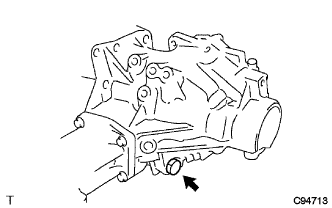

Transfer ASSY (4WD) assembly |
| 1. Transfer dripinione bearing RR mounting |
Use SST and press to press the dripo pinio bearing RR (outer race) into the case.
Apply a gear oil supermarket to the dripon pinio bearing RR (outer race).
| 2. Transfauttput shaft washer installation |
Attach the transferutput shaft to the case to the case.
Apply the gear oil supermarket to the transferutput slashes.
| 3. Transfer dripinione bearing FR installation |
Apply a gear oil supermarket to the position in the figure.
Use SST, bolts and nuts to attach a dripinion bearing FR (outer race) to the case.
 |
Use SST and press to press the dribbon pinion bearing FR (inner lace) into the dripinon.
Apply a gear oil supermarket to the driponpinio bearing FR.
| 4. Installation |
Attach the dripinion to the case.
Attach a new pinion bearing spacer and a dripo -pinois bearing RR (inner lace) to the dripinon.
Apply the gear oil supermarket to the dripon pinis bearing RR.
 |
A lightly applied high pooid gear oil LSD to the screw and seats of the new transfaigear nut, and use a SST to attach the transfaigear nut with the lower limit of the dripinonion pledo adjustment torque.
| 5. Doripinion Preload Adjustment |
The starting torque of the dripinon is measured using SST and torque wrench.
| bearing | Dribun Pinnion Preload |
|---|---|
| New article | 0. 69-1.27 · M {7. 0- 13.0kgf · cm} |
| New article | 0.43-0.81n · m {4.4-8.3kgf · cm｝ CM｝ SST and torque wrench SF3N |
| At the time of reuse | 0.39-0. 69 · M {4. 0-7.0 kgf · cm} |
| At the time of reuse | 0.25-0.44N · m {2.5-4.5kgf · cm｝ CM｝ SST and torque wrench SF3N |
| 6. Ring gear installation |
Heat the ring gear to 90-100 ° C with boiling water.
Heat the fats and oils and moisture on the matching surface of the ring gear and the ring gear mounting case.
Clean the screw hole in the ring gear mounting case.
 |
Combine the combination of the ring gear and the ring gear mounting case and attach it quickly.
Tighten with 10 bolts.
| 7. Ring Gear Mounting Case Bearing Installation |
Use SST and press to press the ring gear mounting case bearing RH (inner lace) into the ring gear mounting case.
Attach the ring gear mounting case bearing RH (outer race) to the ring gear mounting case.
Apply the gear oil supermarket to the ring gear mounting case bearing RH.
Use SST and press to press the ring gear mounting case bearing LH (inner lace) into the ring gear mounting case.
Attach a ring gear mounting case washer on the case.
 |
Use SST and press to press the ring gear mounting case bearing LH (outer race) into the case.
Ring Gear Mounting Case Bearing Apply a gear oil supermarket to LH.
| 8. Transferering gear mounting case installation |
 |
Attach a ring gear mounting case to the case.
| 9. Transfautput Shaft Spaca No.1 Installation |
 |
Attach the spacer to the hole in the case and the notch of the spacer as shown in the figure.
| 10. Transforming gear mounting case washer No.2 Installation |
 |
Use a brass bar and a hammer to attach a transformer gear mounting case washer No.2.
 |
Attach the bearing cap with two bolts.
| 11. Backlash inspection |
The dial gauge is applied to the surface of the ring gear at a right angle, the dripon pinion is fixed, and the ring gear is moved to check.
 |
In the case of outside the reference value, the washer (ring gear mounting case washer) on the ring gear mounting case bearing LH (outer race) side is selected from the table, and it is attached again to make it a reference value.
| Part number | Plate thickness [mm] | Identification mark |
|---|---|---|
| 36265-21350 | 2. 05 | 50 |
| 36265-21360 | 2.80 | 51 |
| 36265-21370 | 2.11 | 52 |
| 36265-21380 | 2.14 | 53 |
| 36265-21390 | 2.17 | 54 |
| 36265-21400 | 2.20 | 55 |
| 36265-21410 | 2.23 | 56 |
| 36265-21420 | 2.26 | 57 |
| 36265-21430 | 2.29 | 58 |
| 36265-21440 | 2.32 | 59 |
| 36265-21450 | 2.35 | 60 |
| 36265-21460 | 2.38 | 61 |
| 36265-21470 | 2. 41 | 62 |
| 36265-21480 | 2.44 | 63 |
| 36265-21490 | 2.47 | 64 |
| 36265-21500 | 2.50 | 65 |
| 36265-21510 | 2. 53 | 66 |
| 36265-21520 | 2. 56 | 67 |
| 36265-21530 | 2. 59 | 68 |
| 36265-21540 | 2. 62 | 69 |
| 36265-21550 | 2. 65 | 70 |
| 36265-21560 | 2. 68 | 71 |
| 36265-21570 | 2. 71 | 72 |
| 36265-21580 | 2. 74 | 73 |
| 36265-21590 | 2. 77 | 74 |
| 36265-21600 | 2.80 | 75 |
| 36265-21610 | 2.83 | 76 |
| 36265-21620 | 2.86 | 77 |
| 36265-21630 | 2.89 | 78 |
| 36265-21640 | 2. 92 | 79 |
| 36265-21650 | 2. 95 | 80 |
| 36265-21660 | 2.98 | 81 |
| 36265-21670 | 3.01 | 82 |
| 36265-21680 | 3.004 | 83 |
| 36265-21690 | 3. 07 | 84 |
The position of the ring gear mounting case washer (for backlash adjustment) is shown in the figure.
| 12. Ling gear and dripinion inspection |
The light gear of the ring gear is applied to all teeth on both sides, and the ring gear is rotated several times, rotating and reverse.
Confirm that the teeth are in the correct tooth hit range in the figure.
In the case of the face, the following tasks are performed.
The ring gear is moved by moving the backlash adjustment (ring gear mounting case washer).(*1)
Re -check the tooth gear and dripinion.
  |
Perform backlash inspections for ring gear and dripinion.
In the case of a heel or to the toe, perform the following work.
Select the washer (transfaruttput shaft washer) on the transfadripinonion bearing FR (outer racing) from the table and attach it again.
| Part number | Plate thickness [mm] | Identification mark |
|---|---|---|
| 36275-33010 | 2.10 | ah |
| 36275-33030 | 2.12 | Ah |
| 36275-33050 | 2.14 | B |
| 36275-33070 | 2. 16 | mosquito |
| 36275-33090 | 2.18 | C |
| 36275-33110 | 2.20 | DB |
| 36275-33130 | 2.22 | air |
| 36275-33150 | 2.24 | Picture C |
| 36275-33170 | 2.26 | FB |
| 36275-33190 | 2.28 | but |
| 36275-33210 | 2.30 | GC |
| 36275-33230 | 2.32 | HB |
| 36275-33250 | 2.34 | well |
| 36275-33270 | 2.36 | JC |
| 36275-33290 | 2.38 | KB |
| 36275-33310 | 2.40 | ah |
| 36275-33330 | 2.42 | LC |
| 36275-33350 | 2.44 | MB |
| 36275-33370 | 2.46 | Named |
| 36275-33390 | 2.48 | C |
| 36275-33410 | 2.50 | PB |
| 36275-33430 | 2. 52 | Ku |
| 36275-33450 | 2.54 | QC |
 |
The figure shows the position of the transferuttput shaft (for tooth adjustment).
| 13. Comprehensive pledo adjustment |
The startup torque (comprehensive pre -loading) is measured using a SST and a torque wrench with a dripon pinon and a ring gear surface.
| bearing | Pinnion Preload |
|---|---|
| New article | Dribun Pinnion Preload+0.39-0.59N · M {4.0-6.0kgf} |
| New article | Dribun Pinnion Preload+0.24-0.37N · M {2.4-3.8kgf · CM · CM ｛CM ｛SST and torque wrench SF3N |
| At the time of reuse | Dripinion Preload+0.25-0.44N · M {2.5-4.5kgf · CM} |
| At the time of reuse | Doribun Pinnion Preload+0.16-0.28N · M |
If the pre -road is not the standard value, select the washer (transformer gear mounting case washer No.2) on the ring gear mounting case bearing RH (outer race) side from the table and assemble it again.
| Part number | Plate thickness [mm] | Identification mark |
|---|---|---|
| 36266-33010 | 2.47 | Afuru 0 |
| 36266-33020 | 2.50 | A 1 |
| 36266-33030 | 2. 53 | A 2 |
| 36266-33040 | 2. 56 | A 3 |
| 36266-33050 | 2. 59 | Sub -4 |
| 36266-33060 | 2. 62 | Sub -5 |
| 36266-33070 | 2. 65 | A 6 |
| 36266-33080 | 2. 68 | Sub -7 |
| 36266-33090 | 2. 71 | Sub -8 |
| 36266-33100 | 2. 74 | A 9 |
| 36266-33110 | 2. 77 | B0 |
| 36266-33120 | 2.80 | B1 |
| 36266-33130 | 2.83 | B2 |
| 36266-33140 | 2.86 | B3 |
| 36266-33150 | 2.89 | B4 |
| 36266-33160 | 2. 92 | B5 |
| 36266-33170 | 2. 95 | B6 |
| 36266-33180 | 2.98 | B7 |
| 36266-33190 | 3.01 | B8 |
| 36266-33200 | 3.004 | B9 |
| 36266-33210 | 3. 07 | C0 |
| 36266-33220 | 3.10 | C1 |
| 36266-33230 | 3.13 | C2 |
| 36266-33240 | 3. 16 | C3 |
| 36266-33250 | 3. 19 | C4 |
| 36266-33260 | 3.22 | C5 |
| 36266-33270 | 3.25 | C6 |
| 36266-33280 | 3. 28 | C7 |
| 36266-33290 | 3.31 | C8 |
| 36266-33300 | 3.34 | C9 |
| 36266-33310 | 3.37 | D0 |
| 36266-33320 | 3.40 | D1 |
| 36266-33330 | 3. 43 | D2 |
| 36266-33340 | 3.46 | D3 |
| 36266-33350 | 3. 49 | D4 |
| 36266-33360 | 3. 52 | D5 |
| 36266-33370 | 3. 55 | D6 |
| 36266-33380 | 3. 58 | D7 |
| 36266-33390 | 3. 61 | D8 |
| 36266-33400 | 3. 64 | D9 |
| 36266-33410 | 3. 67 | Picture 0 |
| 36266-33420 | 3. 70 | Picture 1 |
| 36266-33430 | 3. 73 | Picture 2 |
| 36266-33440 | 3. 76 | Picture 3 |
| 36266-33450 | 3. 79 | Picture 4 |
| 36266-33460 | 3. 82 | Picture 5 |
The figure shows the location of the transfeller gear mounting case washer No.2 (for pledo adjustment).
Re -check backlash inspection.
Re -check the tooth gear and dripinion.
Use a flathead screwdriver and a hammer to squeeze a transfaigear nut.
| 14. Transfer case oil seal RH installation |
Use SST and hammer to hit a new oil seal into the case of the figure.
Apply a small amount of MP grease No.2 to the lip of the oil seal.
| 15. Transfer case oil sticker installation |
Use SST and hammer to hit a new oil seal into the case of the figure.
 |
Apply a small amount of MP grease No.2 to the lip of the oil seal.
| 16. Transfer extension housing oil seal installation |
Use the SST and hammer to the extension housing to the extension housing to the position of the figure.
 |
Apply a small amount of MP grease No.2 to the lip of the oil seal.
| 17. Transfaex station housing dust deflector installation |
 |
Use SST and press to attach a new dust deflector to the extension housing.
| 18. Transfer extension housing installation |
De fat on the mixed surface of the housing with white gasoline.
 |
The sticker packing 1281 is applied to the bead (φ1.2mm) continuously in the position of the extension housing figure.
 |
With four bolts, attach the extension housing to the case.
| 19. Transfer ASSY removed |
Take off Transfer ASSY from the overhaul attachment.
| 20. Transfer case straight pin installation |
Use a plastic hammer to hit the straight pin into the position of the case figure.

| 21. Transfadinamic dampa installation |
 |
With three bolts, attach the dynamic dampa to the extension housing.
| 22. Transfer case cover No.1 installation |
Done of the case cover with white gasoline.
Apply a sticker packing 1281 to the bead (φ1.2mm) in the position of the case cover.
With eight bolts, attach the case cover to the case.
| 23. Transfer case Briza plug installation |
 |
Use SST to driven a new brief plug.
| 24. Transfadren plug installation |
|  |
Attach a transfadlane plug via a new gasket.
| 25. Transface plug No.1 installation |
 |
Attach the transfastra plug No.1 (filler plug) via a new gasket.
| 26. Transface plug No.2 installation |
 |
Attach a transfastra plug No.2 (filler plug) via a new gasket.
| 27. Transfer & Transx Axle Setting Stud Bolt Mounting |
Attach the stud bolt to the position of the case.